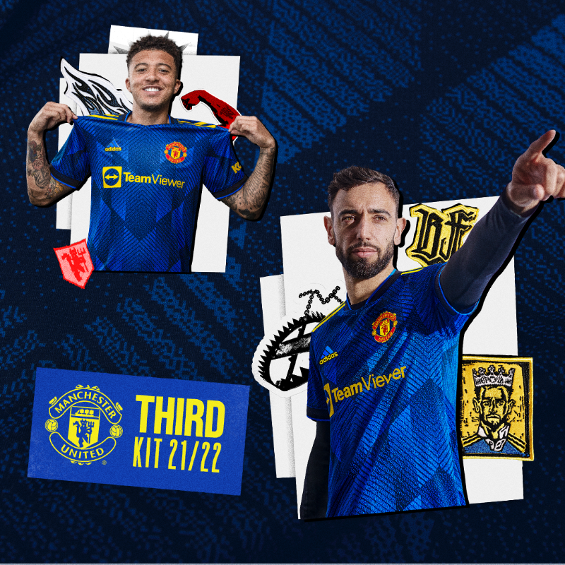
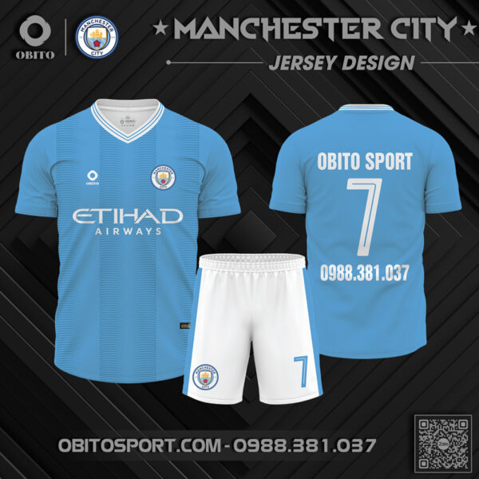
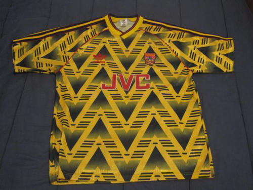
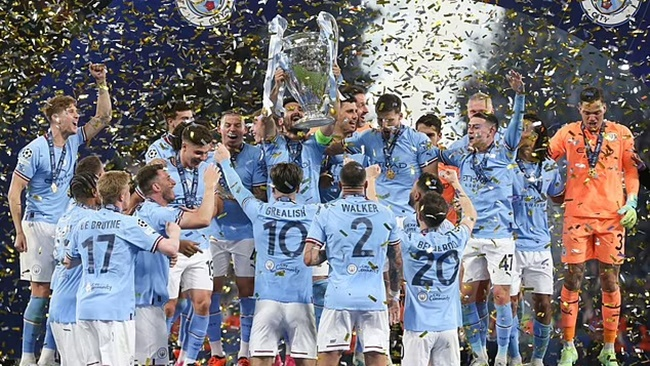

Đánh giá 3 mẫu áo đấu bắt mắt của MU 2021/22
Onsports 1 năm trước

Khám phá Mẫu Áo CLB Man City 2023-2024 Sân Nhà Chiếm Ngôi Vương “Vua Áo Đấu”
Obitosport 4 tháng trước

Những mẫu áo đấu thảo hại nhất lịch sử
Bóng Đá Plus 6 giờ

Top 10 CLB có thu nhập lớn nhất từ việc bán áo đấu
Bóng Đá 13 giờ
Những tiêu chí khi chọn áo bóng đá mà bạn cần biết
Bulbal 9 giờ